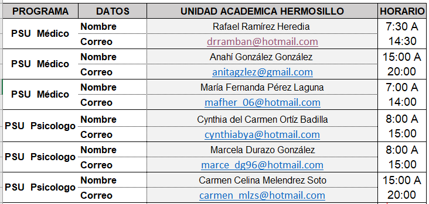
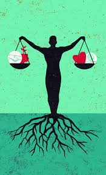
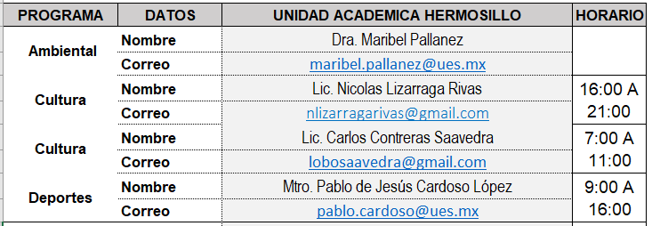

Aquí tienen a su disposición información básica de servicios a los que tienen derecho como estudiantes de UES.
.
Apoyo y Seguimiento Académico
El Programa de Apoyo y Seguimiento Académico (PASA) está enfocado a mejorar el proceso de enseñanza aprendizaje de estudiantes que presentan dificultades para el logro de competencias académicas en su tránsito por la universidad. PASA está orientado a acrecentar el rendimiento en los estudios de aquellos estudiantes que muestran una trayectoria académica irregular, al brindarles atención y orientación académica complementaria a la que reciben de sus profesores asignados en sus asignaturas. Este programa también atiende a estudiantes regulares que, aunque no tienen asignaturas pendientes de acreditar, presentan condiciones de riesgo académico o que lo soliciten por voluntad propia.
Cada alumno cuenta con el soporte de un docente asesor, denominado Docente Guía, quien brinda principalmente la asesoría, acorde a sus necesidades académicas y problemáticas particulares que se les presenten para lograr la comprensión de los diferentes objetos de estudio. Se cuenta con la colaboración de estudiantes, denominados Guías UES, quienes sirven de apoyo en las asesorías.
Salud Universitaria
El programa de Salud Universitaria de la UES está orientado a la prevención, atención, intervención y orientación de estilos de vida saludable, que faciliten el logro y conservación de la salud integral de los miembros de la institución.
Para tal efecto, la UES cuenta con el apoyo de profesionistas de la medicina y la psicología en las Unidades Académicas, quienes brindan atención personalizada a los estudiantes a través de su Plan de Atención:
- Atención continua mediante consulta médica y psicológica.
- Aplicación de distintas pruebas psicométricas.
- Orientación en el desempeño académico.
- Canalización a Instituciones externas en caso de requerirlo.
- Pláticas y Talleres.

-
Programa de Becas

Son dos tipos de apoyos que brinda la institución y de los cuales pueden beneficiarse los alumnos: La Beca que consiste en un apoyo económico entregado por la Universidad o por un organismo externo y el Estímulo que consiste en la exención o descuento en el pago de los conceptos de inscripción, reinscripción y/o costos por materia en cada período escolar. Las becas y los estímulos son asignados a estudiantes que no cuentan con asignaturas reprobadas y que cumplen con el Reglamento Escolar. Los estudiantes inscritos en los programas educativos de la modalidad virtual tienen derecho al estímulo Académico (Se otorga en razón del desempeño académico), intercultural (alumnos que pertenezcan a alguna etnia indígena) y al estímulo de Discapacidad (Estudiantes con alguna discapacidad documentada por una autoridad competente).
.
Programa de Formación Integral

El Programa de Formación Integral es un conjunto de actividades divididas en cuatro sub-programas, para desarrollar competencias genéricas a través de espacios de convivencia donde el estudiante practica, acepta y promueve valores, actitudes, arte y cultura, así como respeto al medio ambiente.
Subprogramas que integran la Formación Integral del estudiante:
- Arte y Cultura. El Programa de Educación Artístico-Cultural, favorece el desarrollo de competencias interpersonales por medio de la organización y promoción de eventos, actividades artísticas y culturales.
- Educación en Valores. Por medio del Programa de Valores, organiza y difunde actividades que originen y fortalezcan valores éticos, profesionales y ciudadanos que contribuyan al logro de un comportamiento equitativo y de respeto.
- Deportes. Este programa fomenta la sana convivencia entre los estudiantes al mismo tiempo de promover salud física a través de la práctica de actividades deportivas, recreativas y de esparcimiento.
- Educación Ambiental. Dentro de este programa se promueve entre la comunidad la toma de conciencia sobre el cuidado del medio ambiente. Se brinda conocimiento sobre herramientas aplicables para el cuidado de los recursos de forma general, por medio de campañas, talleres, conferencias de ecología, educación ambiental, entre otros.
